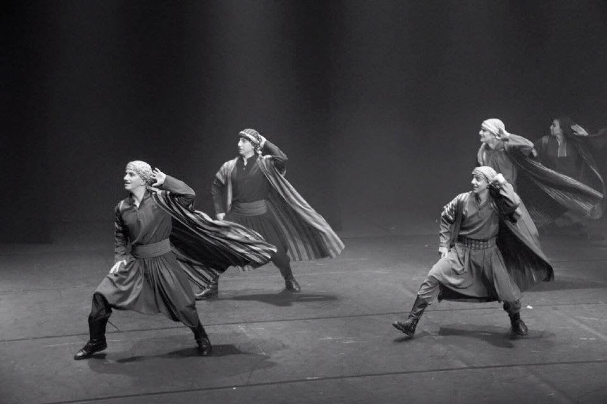
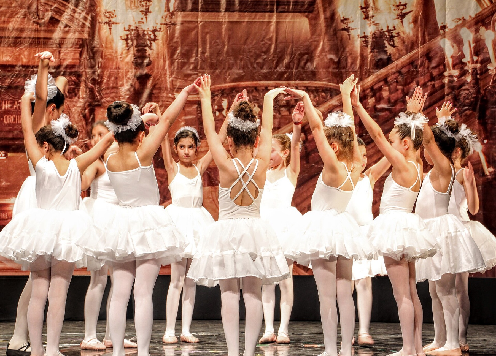
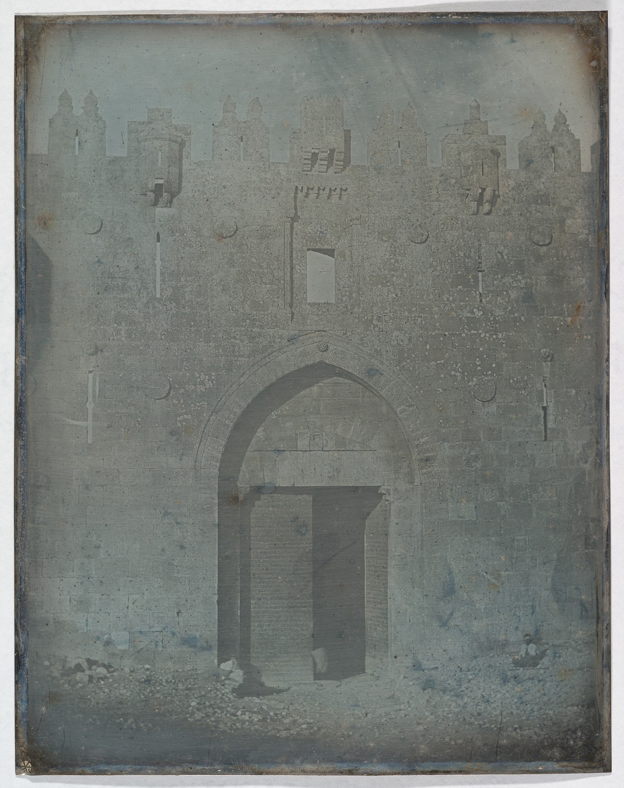

Scroll
Strengthening the cultural infrastructure for Palestinian agency
Preserving memory, nurturing identity, and building a sustainable, interconnected Palestinian cultural ecosystem.
A platform for support, learning and collaboration.
Mada is a dedicated platform for support, learning, and collaboration, committed to strengthening Palestinian cultural and artistic organizations and sustaining the wider cultural ecosystem. Moving beyond short-term interventions, Mada provides deep, transformative support that empowers cultural institutions to define, develop, and sustain their work independently and on their own terms. By strengthening their long-term sustainability and connecting them with expertise, resources, and one another, Mada nurtures a more connected and resilient cultural community, enabling Palestinian artists and organizations to preserve identity, nurture collective memory, and amplify their stories globally, bridging humanity and asserting agency through the transformative power of art and culture.
A thriving, sustainable, and interconnected Palestinian cultural ecosystem in which Palestinian artists and cultural organizations have the agency, resources, expertise, and connections to shape, sustain, and share their own cultural future.
Mada strengthens Palestinian cultural and artistic organizations by building their sustainability, connecting them to expertise and resources, and creating opportunities for learning, collaboration, and global reach.
What makes Mada different
Mada addresses these challenges through a holistic model centered on practical transformation, institutional resilience, and ecosystem building.
Fundraising readiness & revenue diversification
Equipping organizations with the skills, tools, and networks to pitch projects effectively and develop earned-income models to reduce donor dependency.
Organizational resilience & mindset shift
Strengthening internal governance, leadership succession, and organizational structures while fostering a culture of continuous reflection, adaptation, and agility.
Long-term sustainability
Moving beyond advice by placing real resources, specialists, and practical implementation support behind strategic recommendations.
Collaboration & the wider ecosystem
True sustainability cannot happen in isolation. Mada connects organizations across disciplines, regions, and international networks to foster shared learning, resource exchange, and collective leadership. By developing a shared pool of expertise and building bridges to global partners, Mada helps create a resilient cultural infrastructure that protects Palestinian identity, narrative, and agency.
Two core functions
Mada operates on a holistic model designed to deliver both targeted institutional development and broad ecosystem impact.
Strengthening organizations through hands-on technical assistance, governance, and income generation strategies.
Connecting the wider ecosystem to energize networks, encourage shared learning, and unlock global resources.
The 2026 pilot cohort
In 2026, Mada launched its inaugural pilot cohort, partnering closely with five key institutions that represent diverse art forms, geographies, and roles within Palestinian cultural life.
Through tailored accompaniment, Mada offers non-prescriptive support focused on fundraising readiness, organizational capacity development, governance, and revenue diversification. We also actively connect organizations with specialist consultants, advisors, global partners, and funders to help turn strategic plans into concrete action.



Over the long term, Mada strives to create a resilient, interconnected Palestinian cultural infrastructure. By ensuring that cultural institutions have the resources, independence, and connections to thrive, Mada helps safeguard the narrative sovereignty, identity, and agency essential to Palestinian liberation.
The people behind Mada
Join the movement.
Building a resilient, interconnected Palestinian cultural ecosystem is a collective effort. Whether you are an arts and culture organization seeking partnership, a funder looking to create lasting impact, or a passionate individual eager to volunteer your expertise, we invite you to join us. Together, we can nurture creative agency, protect narrative sovereignty, and strengthen the foundations of Palestinian culture worldwide.